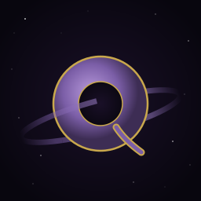

Quaoar

A proof-of-concept SVG thin client display protocol. Remote applications send structured scene graph operations over a Unix socket; a browser-based display server renders them as interactive SVG.
Named after the trans-Neptunian object.
Quick Start
make
./quaoar-server &
# open quaoar-client.html in a browser
./notepad
The notepad window appears in the browser. Type, click Save/Load, close the window — all interactions except typing happen locally in the browser with zero network round-trips.
./clock
An analog clock with SMIL-animated hands. The application sends the clock face once; the browser animates the sweep natively.
Architecture
┌─────────────┐ Unix socket ┌───────────────┐ WebSocket ┌─────────┐
│ Application │ ──netstrings──▸ │ quaoar-server │ ────────────▸ │ Browser │
│ (notepad) │ ◂──events───── │ (bridge) │ ◂──events─── │ (SVG) │
└─────────────┘ └───────────────┘ └─────────┘
│ │
libquaoar.c multiplexes N apps
(widget API) onto 1 WebSocket
Applications link against libquaoar, which provides a widget API
(qu_window, qu_button, qu_label, qu_textarea, qu_scrollbar,
qu_svg). The library emits SVG+SMIL markup over netstring-framed
messages to quaoar-server, which bridges Unix sockets to a single
WebSocket connection. The browser loads quaoar-client.html, a
generic SVG insertion engine that lets the browser’s native SMIL engine
handle hover effects, press animations, and other declarative behaviors.
See PROTOCOL.md for the wire protocol specification.
Installation
make
make install # installs to /usr/local by default
make install PREFIX=/opt/quaoar
Installs quaoar-server, notepad, and clock to $(PREFIX)/bin,
and man pages to $(PREFIX)/share/man.
Server
quaoar-server [-p port] [-s socket_path]
Defaults: WebSocket on port 9090 (localhost only), Unix socket at
/tmp/quaoar-0.
Applications find the display via the QUAOAR_DISPLAY environment
variable. If unset, they connect to /tmp/quaoar-0.
quaoar-server is a pure message bridge (~630 lines of C, no dependencies). It implements the WebSocket handshake (including inline SHA-1 and base64) and frame read/write directly.
See quaoar-server(1) for details.
C Library
See libquaoar(3) for the full API reference. Summary:
/* connection */
qu_ctx *qu_connect(const char *display);
void qu_disconnect(qu_ctx *ctx);
int qu_fd(qu_ctx *ctx);
int qu_process(qu_ctx *ctx);
/* events */
void qu_on_event(qu_ctx *ctx, int id, qu_event_fn fn, void *arg);
/* widgets — all return an integer widget ID */
int qu_window(qu_ctx *ctx, const char *title, int x, int y, int w, int h);
int qu_button(qu_ctx *ctx, int parent, const char *label, int x, int y, int w, int h);
int qu_label(qu_ctx *ctx, int parent, const char *text, int x, int y);
int qu_textarea(qu_ctx *ctx, int parent, int x, int y, int w, int h);
int qu_scrollbar(qu_ctx *ctx, int parent, int x, int y, int w, int h, char orient);
int qu_svg(qu_ctx *ctx, int parent, const char *markup);
/* updates */
void qu_set_text(qu_ctx *ctx, int id, const char *text);
void qu_set_prop(qu_ctx *ctx, int id, const char *key, const char *value);
void qu_remove(qu_ctx *ctx, int id);
void qu_set_clipboard(qu_ctx *ctx, const char *text);
Event loop pattern
struct pollfd pfd = { .fd = qu_fd(ctx), .events = POLLIN };
while (!quit && poll(&pfd, 1, -1) >= 0) {
if (pfd.revents & (POLLIN | POLLHUP))
if (qu_process(ctx) < 0) break;
}
Custom SVG Widgets
The convenience functions are thin wrappers around qu_svg().
Applications can create any widget by constructing SVG directly:
- Use
<g transform="translate(x,y)">to position widgets - Use
<set attributeName="fill" begin="mouseover" end="mouseout"/>for hover effects - Use
<set begin="mousedown" end="mouseup"/>for press effects - Mark text elements with
data-qu-text="1"forqu_set_text() - Use
data-qu-dragfor 1D constrained drag (sliders, scrollbars) - Use
data-qu-xyfor 2D drag (color pickers, position handles)
No changes to quaoar-server or quaoar-client.html are needed —
the application just emits SVG. See clock.c for a complete example.
Deployment
For localhost development, open quaoar-client.html directly in a
browser. For production, place quaoar-server behind a reverse proxy
that handles TLS and optionally WebSocket compression.
nginx
server {
listen 443 ssl;
server_name quaoar.example.com;
ssl_certificate /etc/ssl/certs/quaoar.pem;
ssl_certificate_key /etc/ssl/private/quaoar.key;
# Serve the display client
location / {
root /srv/quaoar;
index quaoar-client.html;
}
# Proxy WebSocket to quaoar-server
location /ws {
proxy_pass http://127.0.0.1:9090;
proxy_http_version 1.1;
proxy_set_header Upgrade $http_upgrade;
proxy_set_header Connection "upgrade";
proxy_set_header Host $host;
proxy_read_timeout 3600s;
proxy_send_timeout 3600s;
}
}
Other proxies
caddy — reverse_proxy /ws 127.0.0.1:9090
haproxy — tcp mode with WebSocket health checks
stunnel — TLS termination at the TCP layer
The server is proxy-agnostic — it performs the HTTP upgrade itself, so any proxy that passes through WebSocket connections will work.
Not included
Display manager login (cf. XDMCP), session persistence, and session management are left as exercises for the reader.
License
MIT-0 OR Public Domain